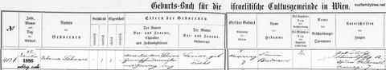
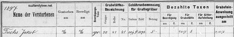
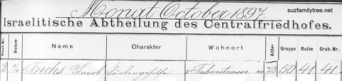

Jakob Fuchs
1824–1897
Life events
| Hebrew Name | 1824 · Yakov ben (son of) Itzak - per gravestone |
|---|---|
| Born | 30 May 1824 · Námestovo, Zilinsky, Slovakia Map |
| Married | about 1846 · Johanna 'Hana' Kohn |
| Lived | 1850 · Námestovo, Zilinsky, Slovakia Map · Film: 2062256.7. Image: 19. Pg: 19. Rec: 421 (not online). Note: the town of Slanitz (Slanica) ceased to exist in 1953 when it was flooded by the construction of Orava Dam. Film: 2062256.7. Image: 19. Pg: 19. Rec: 421 (not online)
Was Námesztó, Hungary. Town Slanitz, Arva, Hungary. Slanitz/Slanica ceased to exist in 1953 it was flooded by construction of Orava Dam.  |
| Lived | 17 Feb 1852 · Námestovo, Zilinsky, Slovakia Map · A witness on nephew Josef Fuchs' birth record. |
| Lived | 31 Jul 1853 · Námestovo, Zilinsky, Slovakia Map · A witness on nephew Wolf Fuchs' birth record. |
| Lived | 22 Sep 1878 · Langenzersdorf, Korneuburg, Lower Austria, Austria Map · A witness at daughter Leonore (Lotti)'s 1st wedding |
| Lived | 7 Dec 1884 · 1020 Nickelgasse 4, Vienna, Austria Map · Per grandson, Philipp Schwarz', birth record. |
| Lived | 8 Jan 1894 · 1020 Kleine Pfarrgasse 29, Vienna, Austria Map · Per grandson, Edmund Blau's, birth record. |
| Lived | 10 Oct 1897 · 1020, Taborstrasse 49, Vienna, Austria Map · Fabric dyeing assistant (Färbergehilfe) On his death record, his occupation was listed as Färbergehilfe, fabric dyeing assistant. His son in law, Samuel Blau, had the same profession, they likely worked together. |
| Died | |
| Buried | 13 Oct 1897 · Zentralfriedhof Tor I, 1110 Simmeringer Hauptstrasse 230b, Vienna, Austria Map · Group 50. Row 41. Grave 41. Interestingly: Of all of his survivors, only his Granddaughter, Ernestine Blau, is mentioned on his gravestone. Wording on Gravestone: |
Family
Jakob Fuchs1824–1897
Johanna 'Hana' Kohn1822–1880
Children
 Rosi Fuchs1848–1887
Rosi Fuchs1848–1887 Betti Borbola Fuchs1850–1933
Betti Borbola Fuchs1850–1933 Leonore Lotti Fuchs1859–1947
Leonore Lotti Fuchs1859–1947
Photos
Jakob Fuchs
Johanna 'Hana' Kohn
Rosi Fuchs

Jakob Fuchs
Johanna 'Hana' Kohn
Leonore Lotti Fuchs

Jakob Fuchs
Moses Moritz Schwarz

Jakob Fuchs
Moses Moritz Schwarz

Edmund Blau
Jakob Fuchs
Jakob Fuchs

Jakob Fuchs

Jakob Fuchs
Jakob Fuchs